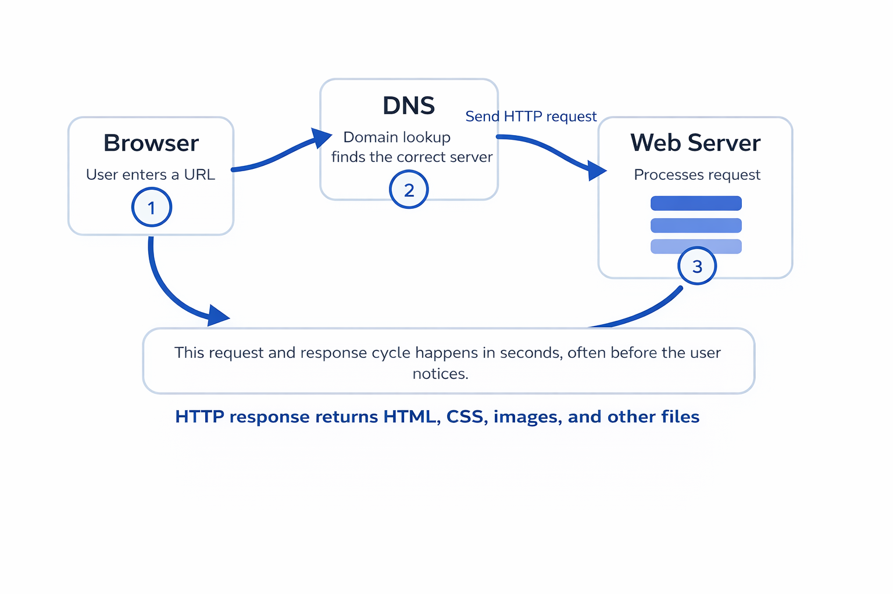

Web Servers and HTTP: How the Web Really Works Behind the Scenes
This website explains the basic systems that allow webpages to load, data to move, and users to connect with content across the web. It builds from my research paper and organizes the information into a simple website format.
Web ServerHTTPDNSRequestResponseHTTPS
Topic Focus
How browsers and servers communicate to deliver webpages.
Research Goal
Explain the web in clear language for beginner readers.
Site Structure
7 pages with great design, tables, images, and linked resources.

A simplified view of what happens after a user enters a web address into a browser.
Abstract
The web feels instant, but that speed depends on a lot of coordinated work. A browser must locate the right server, request the correct file, and receive a response that can be displayed to the user. This project focuses on the two technologies at the center of that process: web servers and HTTP. It also looks at how HTTP evolved over time and why modern servers now handle security, performance, and application traffic in addition to basic file delivery.
Key Terms
Web Server
A machine or program that stores web content and sends it to users when requested.
HTTP
The communication protocol that lets browsers and servers exchange information.
DNS
The naming system that converts a domain name into the address of a server.
Status Code
A short server message that tells the browser whether a request worked.
Most people use the web every day without thinking about the systems behind it. Learning how servers and HTTP work makes web development feel less mysterious. It also helps explain why performance, security, and browser behavior matter so much when building a website.